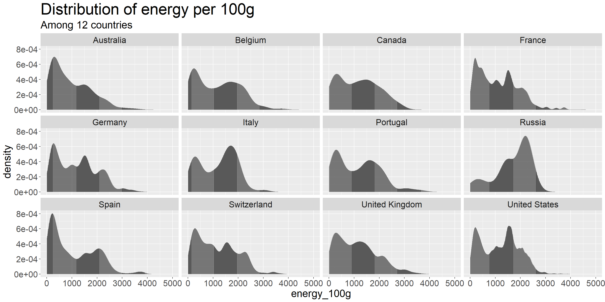
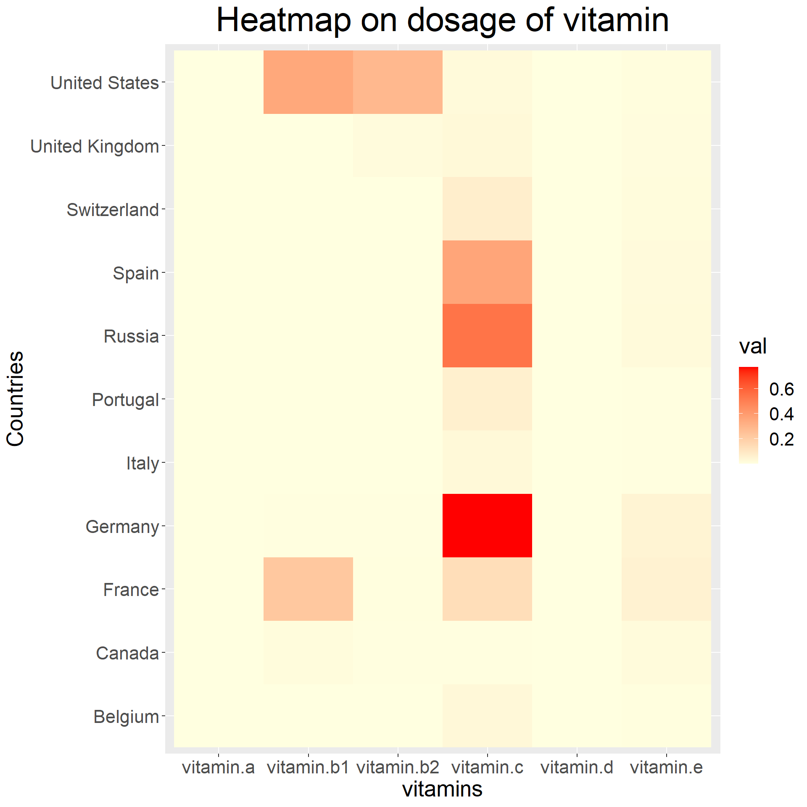
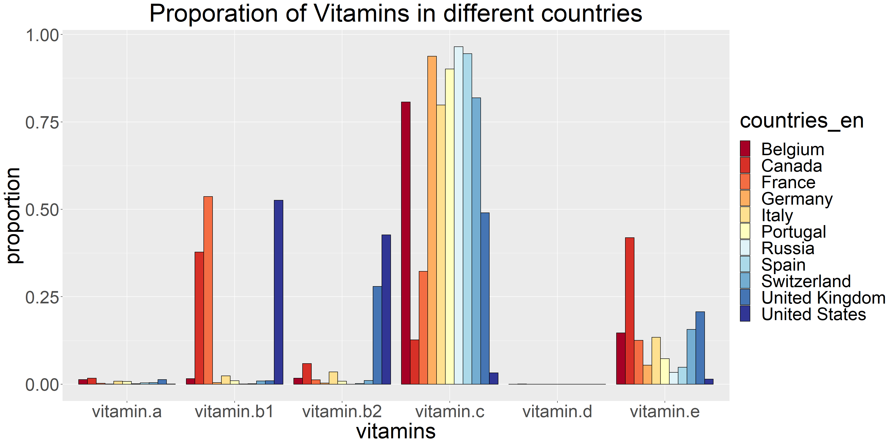
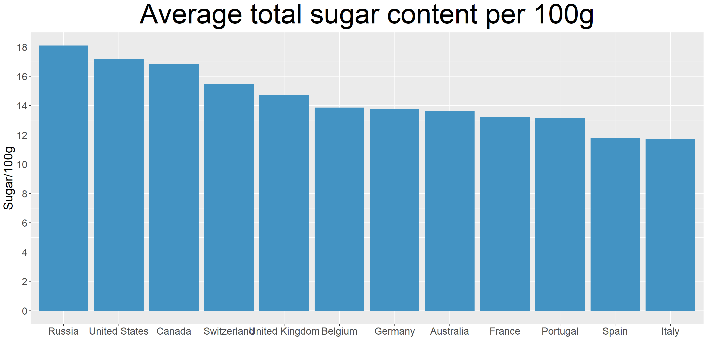
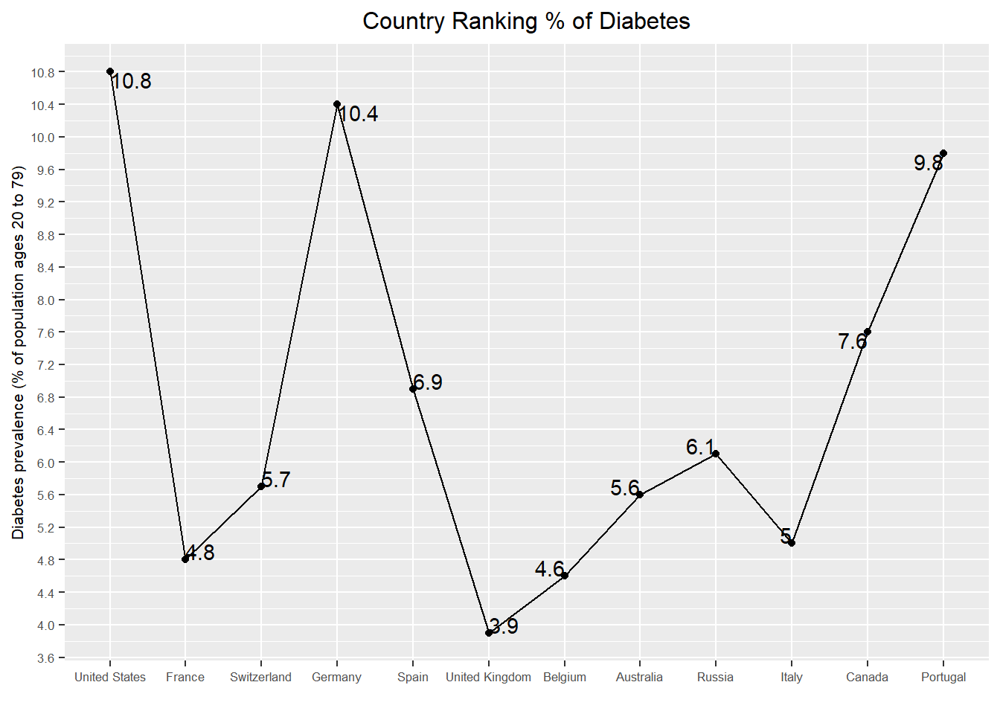
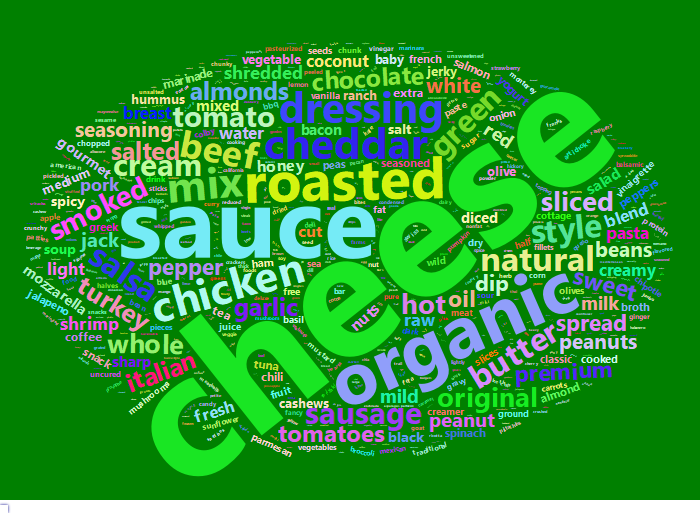
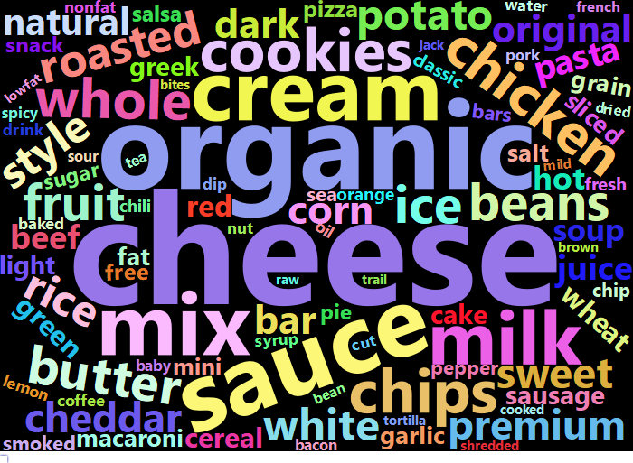
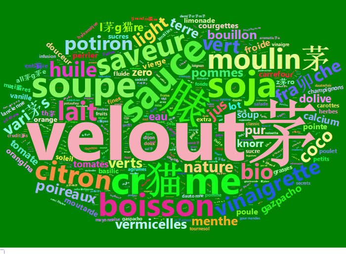
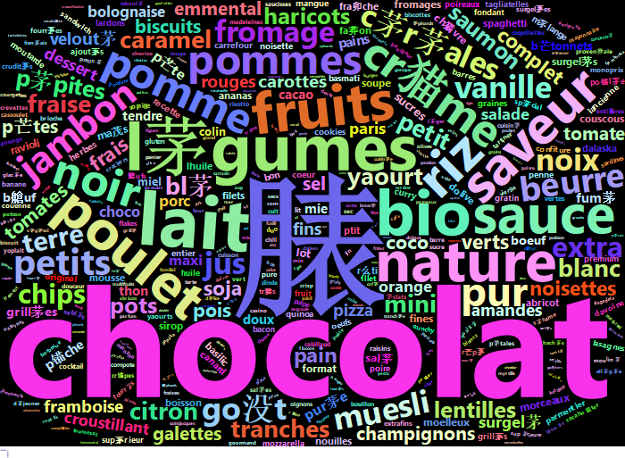

Chapter 5 Results
5.1 How Vitamins on Food Markets Vary by Country?
Select top 12 countries with the most varieties of food in the dataset:
## # A tibble: 12 x 2
## # Groups: countries_en [12]
## countries_en n
## <chr> <int>
## 1 United States 173159
## 2 France 123984
## 3 Switzerland 14932
## 4 Germany 8470
## 5 Spain 5529
## 6 United Kingdom 5092
## 7 Belgium 2936
## 8 Australia 2201
## 9 Russia 1582
## 10 Italy 1433
## 11 Canada 973
## 12 Portugal 738Collecting foods with the nutrition score and energy that were sold in those 12 countries:
## countries_en energy_100g
## 1: United States 1941
## 2: United States 2540
## 3: United States 1833
## 4: United States 2230
## 5: United States 1824
## 6: United States 26325.1.1 Energy in food among different countries
This graph presents the distribution of energy per 100g in foods that were sold in those 12 countries. And our team observe one fascinating fact from it. While other countries present a trend of multimodality, the trend is more obvious in countries like United Kingdom and Spain. Russia, on the contrary, sell food with an unimodal pattern, moreover, Russia is more likely to sell food with high energy per 100g. I believe that is due to the climate reason. As the websites (https://www.weatheronline.co.uk/reports/climate/Russia.htm) has suggested
“In general, the climate of Russia can be described as highly continental influenced climate with warm to hot dry summers and (very) cold winters with temperatures of -30°C and lower and sometimes heavy snowfall. sometimes very strong easterly winds, called Buran can occur, bringing freezing cold temperatures and snowstorms.”
That extreme weather fluctuations requiring Russians to consume more energy to make up for the loss of body function.
While for other countries where the climate fluctuations is not that dramatic, the distribution of energy per 100g in food tend to be multimodal. Moreover, the highest peak is more likely to appear in a low energy area.

5.1.2 Vitamins among Different countries
select all vitamins family, energy, countries, nutrition score from the dataset. Australia will be eliminated because the whole vitamin-d and vitamin-e part are missing:
## # A tibble: 66 x 3
## # Groups: countries_en [11]
## countries_en vitamins val
## <chr> <chr> <dbl>
## 1 Belgium vitamin.a 0.000468
## 2 Canada vitamin.a 0.000628
## 3 France vitamin.a 0.00109
## 4 Germany vitamin.a 0.000588
## 5 Italy vitamin.a 0.000278
## 6 Portugal vitamin.a 0.000529
## 7 Russia vitamin.a 0.000623
## 8 Spain vitamin.a 0.00153
## 9 Switzerland vitamin.a 0.000391
## 10 United Kingdom vitamin.a 0.000718
## # ... with 56 more rows
This graph describe the difference of vitamins’ dosage among different countries. As can be seen in this graph that most countries use the most dosage of vitamin C among all vitamin family indicating vitamin C is the most important and easily obtained vitamin among all vitamin family. As is known to all foods like oranges, strawberries, peppers, broccoli, potatoes are rich in vitamin C, and they are all daily necessary food, no wonder it takes higher dosage than other vitamins.
As can be compared, Germany use the highest dosage in vitamin C, suggesting that there might be rich sources of vitamin C in Germany.
While most countries use the most dosage in vitamins C among vitamins family, the US use the most dosage in vitamin b1 and vitamin b2. It is said that there are high concentrations of Vitamin B1 in the outer layers and germ of cereals, as well as in yeast, beef, pork, nuts, whole grains, and pulses; foods like eggs, fortified cereals, bread, and grain products are high in vitamin B2, which are all popular among the US. That might account for the reason why vitamin b1 and b2 take a higher dosage in th US than other countries.
## # A tibble: 11 x 7
## # Groups: countries_en [11]
## countries_en vitamin.a vitamin.b1 vitamin.b2 vitamin.c vitamin.d vitamin.e
## <chr> <dbl> <dbl> <dbl> <dbl> <dbl> <dbl>
## 1 Belgium 0.0133 0.0159 0.0169 0.807 0.000154 0.147
## 2 Canada 0.0170 0.378 0.0592 0.127 0.000512 0.419
## 3 France 0.00259 0.537 0.0125 0.323 0.0000121 0.125
## 4 Germany 0.000714 0.00456 0.00291 0.938 0.0000970 0.0540
## 5 Italy 0.00859 0.0235 0.0351 0.798 0.000126 0.134
## 6 Portugal 0.00770 0.0101 0.00851 0.901 0.0000614 0.0728
## 7 Russia 0.00111 0.000531 0.000140 0.965 0.0000185 0.0335
## 8 Spain 0.00399 0.00110 0.00156 0.945 0.00000336 0.0483
## 9 Switzerland 0.00459 0.00910 0.0108 0.819 0.0000485 0.157
## 10 United Kingdom 0.0132 0.00974 0.280 0.490 0.0000738 0.207
## 11 United States 0.000232 0.526 0.427 0.0321 0.00000413 0.0145
This is the proportion of vitamins family in each countries so that we can observe more clearly on the proportion of vitamins. Still we can draw a similar conclusion that Vitamin C take a higher proportion among all foods than other vitamins.
Also we can discover some new facts from it: vitamin E is the second to the most popular vitamin after vitamin C. Vitamin E is found in planted-based oils, nuts, seeds, fruits and vegetables, which are all daily necessary food.
Moreover, all countries in the list use minimum dosage of vitamin D. Most popular food with rich Vitamin D is oily fish, liver, egg yolks, which is not necessary for daily food consumption. That might account for the reason why there is minimum dosage of vitamin D.
5.2 Which country eat the most sugar?

Russia ranks no.1 of average total sugar content and United States also have a high average sugar content.
5.3 Which country has the highest diabetes prevalence?

Among these 12 countries, in the above plot, US has highest diabetes prevalence with 10.8% of population aged 20-79 with diabetes. Three peaks in the above plot corresponds to US, Germany and Portugal.
5.4 What are the most frequent keywords in a Keto-friendly product in the US and France supermarkets?
The Ketogenic Diet is one of the well-known diets gaining a lot of popularity in recent years all over the world. It pursues a low-carbohydrate, high-fat eating plan to treat particular medical conditions such as diabetes and is also known as an effective weight-loss dietary plan for most people in the way that it restricts hormone that induces weight gain. We would like to know what are the notable keywords in products classified as keto-friendly certified products and keywords in ordinary products and compare.
We first want to classify which products are Keto-friendly products. The Keto Certified Standards by KETOCERTIFIED, a third-party Keto certification organization that issues certificates to food products in the market, are adopted for the classification standard. According to the standard, Keto-friendly products must not contain more than 10g net/effective carbohydrates per serving. Since we are interested in calculating net carbohydrates per serving, we first calculated it using carbohydrates_100g, fiber_100g, serving_size features.
Since product names are written in each countries different language settings, we divided the data with different countries to calculate net carb. Products with missing carb, fiber, serving size, and product name are neglected. Most serving sizes of products are in gram(g) and milliliter(ml) units, so other irregular units such as 1 biscuit or 1 cookie are neglected as well.
(However, even though the dataset has its own ‘category’ features, most products are labeled in irregular setting or omitted, which make differentiating Keto standards for ‘snacks’, and ‘condiments’ less meaningful. So, in this analysis, specific standards for the two food categories are ignored. There are not enough product names are left after manipulating products in German supermarkets, so the German dataset is excluded in the WordClouds map.)
In the US supermarket, we can easily recognize there are different trends in keywords between keto-friendly products and ordinary products. Most frequent keywords in Keto-friendly products in the United States are “cheese”, “sauce”, “organic” ,“roasted” ,“chicken” ,“cheddar” ,“mix” ,“dressing”, “beef”, and “natural”. Most frequent keywords in ordinary products in the US are “chocolate”, “cheese”, “organic” ,“sauce”, “mix”, “cream”, “milk”, “chips”, “cookies”, and “chicken”. It’s expected that high sugar-like words such as “chocolate”, “chip”, and “cookies” are not to be included in the Keto-friendly WordClouds map; it is quite surprising, however, that products linked with high-sugar keywords take up many parts in the market. I didn’t expect the keyword “chocolate” would account for the largest portion of the word count frequency.
Though the WordClouds map in the French supermarkets is shown in the French language, we can recognize the most frequent word in the ordinary products are also “Chocolat”. When I translated the most frequent 10 words in the French supermarkets to English, those are “chocolate”, “milk”, “vegetables”, “organic”, “plain”, “fruit”, “chicken”, “rice”, “sauce”, and “flavor”. The words of ordinary products in the French supermarkets contain fresher, less refined, and less sugary words than those in the US supermarkets.
Ingesting a high level of sugar and refined carbohydrates could be harmful to maintaining the best health condition. By realizing there are lots of sugar products in the market and so it is very likely to ingest unwanted sugar even without noticing, it could help to preserve one’s health by keeping one’s eyes open.
## [1] "cheese" "sauce" "organic" "roasted" "chicken" "cheddar" "mix" "dressing"
## [9] "beef" "natural"## [1] "chocolate" "cheese" "organic" "sauce" "mix" "cream" "milk"
## [8] "chips" "cookies" "chicken"
## [1] "l茅gumes" "velout茅" "脿" "sauce" "cr猫me" "soja" "soupe" "boisson"
## [9] "saveur" "moulin茅"## [1] "脿" "chocolat" "lait" "l茅gumes" "bio" "nature" "fruits" "poulet"
## [9] "riz" "sauce"